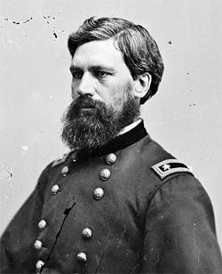
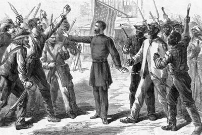

|
Congress created the Bureau of Refugees, Freedmen, and Abandoned Lands,
commonly known as the Freedmen's Bureau, on March 4, 1865 to help
ex-slaves negotiate the difficult transition from slavery to freedom.
The primary task of the Freedmen's Bureau was to transform the South
into a free labor society. The Bureau's 900 agents had the nearly
impossible task of introducing a free labor system, educating the
freedmen, aiding the ill, insane, aged, and poor, passing judgment on
inter-racial quarrels, and instituting an impartial justice system. The
Bureau was continually understaffed, under-funded, and subject to
hostile, Southern white opposition. For all of its limitations and
weaknesses, however, the Freedmen's Bureau demonstrated the Federal
government's commitment to making freedom a reality for ex-slaves.
The Bureau was designed to meet the needs of ex-slaves at the end of
the War. Contraband camps throughout the South strained under the
burden of providing provisions for thousands of freed people who had
|

Oliver O. Howard
|
fled their masters. In 1863 the American Freedmen's Inquiry Commission
suggested the creation of a permanent institution to meet the needs of
War refugees and to help ex-slaves become self-reliant. As a measure of
the enormity of the endeavor, over twenty-one million rations were
distributed to destitute black and white Southerners over the life of
the Freedmen's Bureau.
Attached to the War Department, the Bureau was charged with
distributing aid and helping the former slaves attain land ownership.
Commissioner General Oliver Otis Howard headed the agency and was
assisted by ten assistant commissioners, one for every former
Confederate state. Howard was a Civil War general, a devout Christian,
and a strong advocate of civil rights for recently emancipated slaves.
The Freedmen's Bureau legislation authorized Howard, as commissioner, to
divide abandoned land into 40-acre plots for settlement by freedmen
families, and to set up lease agreements for a term of three years at a
low interest rate. At the end of the term, the freedman could purchase
the land.
In the South Carolina Sea Islands and along the Mississippi River,
experiments in black landownership during the war sought to establish
patterns for settlement. On January 16, 1865, General William T.
Sherman issued Special Field Order No. 15, which set aside the coastal
areas of South Carolina, Georgia, and Florida for the freedmen. Within
six months, 40,000 freedmen had been settled on 400,000 acres. In Davis
Bend, Mississippi, the Freedmen's Bureau established a black colony by
leasing land that ex-Confederate President Jefferson Davis once occupied
to ex-slaves. In Louisiana, Bureau agents converted abandoned
plantations into black communities. Though these settlement plans were
temporary measures, the freedmen worked the land, produced profits, and
claimed ownership.
Land redistribution was the single most contentious issue during the
existence of the Freedmen's Bureau. Not only was land an economic asset
and a means for self-sufficiency, but in the mid-nineteenth century,
land ownership was equated with independence and citizenship. At its
peak, however, the Freedmen's Bureau controlled only 800,000 acres of
land, enough to settle just 20,000 families on 40-acre plots, not nearly
enough for four million former slaves. Compounding the problem of land
redistribution was a vigorous campaign by Southern whites to regain
title to the small amount of land that the Bureau did possess.
Plans to place freedmen families on 40-acre plots also ran into
significant opposition from President Andrew Johnson. Johnson issued an
Amnesty Proclamation on May 29, 1865, pardoning former Confederates
(except the wealthy and certain political leaders) and restoring their
confiscated land. The proclamation specifically ignored the fact that
freedmen already occupied much of this land and were working it for
themselves. This decision also threatened the solvency of the Bureau,
since much of its revenue came from the income from leased land.
Commissioner Howard moved to absorb all confiscated land under the
control of other federal agencies into the Freedmen's Bureau and to
immediately distribute the land. President Johnson, however, countered
by issuing executive orders to restore the land to the original owners.
Understandably, the freedmen felt betrayed by the rescinding of their
land grants. They believed that the land belonged to them -- they had
made it productive. Congress subsequently took up the issue of land
redistribution in the Southern Homestead Act of 1866. It set aside over
three million acres of federal land for settlement by the freedmen,
however few were able to secure a homestead. When the law went into
effect on the first day of 1867, many freedmen were already tied to
yearlong labor contracts which prevented them from making a claim.
Others lacked the capital needed for tools and animals, or the time
needed to clear unimproved land. Black codes forbade black
landownership and, in some states, restricted leasing. Even the actual
land held problems for the freedmen, since most of the Federal land was
of poor quality. In the end, only 4,000 freedmen families settled in
Southern homesteads.
Despite failed attempts at land redistribution, the freedmen remained
loyal supporters of the Freedmen's Bureau. Although most agents often
deferred to local planters in disputes over working conditions or labor
contracts, agents like the ones in the South Carolina Sea Islands had
the true interests of the freedmen in mind and consistently sided with
them against the planters. The freedmen used the Bureau as their
advocate to resist the power of planters and local whites. Planters
pushed for a labor system similar to slavery: yearlong contracts that
tied freedmen to the land and gang labor. The freedmen resisted by
|

This 1867 illustration from Harper's Weekly
presents a very positive view of the Freedmen's Bureau, showing
an agent of the Bureau intervening to keep the peace between
white and black Southerners. Such optimism would not last.
|
withholding their labor and eventually settling on a system of
sharecropping. The Freedmen's Bureau attempted a moderate approach in
the transition to free labor. They placed African-Americans at work on
plantations, while providing for schools and protecting them from white
violence.
Education was the greatest achievement of the Freedmen's Bureau.
Although it was not among the original directives from Congress, the
Bureau, along with Northern benevolent societies and state governments,
funded black education because the freedmen demanded it. Three thousand
schools were constructed by 1869, enrolling 150,000 students. The
Bureau also assisted in establishing black colleges designed to train
African American teachers for the new schools. The Bureau's attempt to
protect blacks from white violence was less successful than its
educational program. They were never able to assemble enough troops to
prevent violence against African Americans. Furthermore, they relied on
Southern state courts for judicial proceedings, instead of Freedmen's
Bureau courts which were authorized to intervene in civil rights cases
when blacks were not treated equally.
The Freedmen's Bureau lasted until 1872. However, with the passage of
the Reconstruction Act of 1867, most of the responsibilities of the
Bureau passed over to the military. Foreshadowing the shift toward
Radical Reconstruction, Congress passed a bill extending the life of the
Freedmen's Bureau over President Johnson's veto in 1866. In one of its
last major initiatives, the Bureau registered thousands of black voters
across the South. The Freedmen's Bureau and the federal government
failed to provide land for freedpeople, but many hoped that acquiring
the vote would provide the foundation for lasting freedom.
Institutionally, the Freedmen's Bureau was an example of the
expanding powers of the nation-state in the wake of the Civil War. It
marked one of the first times that federal power was used to provide for
the general welfare of a segment of the population. Despite its
pioneering mandate, the Bureau was less than successful in its goal to
help freedmen make themselves into free and equal citizens. In
fairness, material resources and manpower were never sufficient to meet
the needs of the four million ex-slaves, and most white Southerners
fought the Bureau's efforts to uplift the freedmen and freedwomen at
every step. Though slavery was destroyed, white planters hoped to
recreate a subservient labor force to work the cotton fields. Even
Freedmen's Bureau agents denigrated the capacity of freedmen to become
independent proprietors. Nevertheless, the Bureau established a legacy
of federal commitment to African Americans.
Source: Joan Waugh, ed., Facts on File Encyclopedia of American
History: Civil War and Reconstruction, 1856 to 1869 (New York: Facts on
File, 2003), 142-44.
|